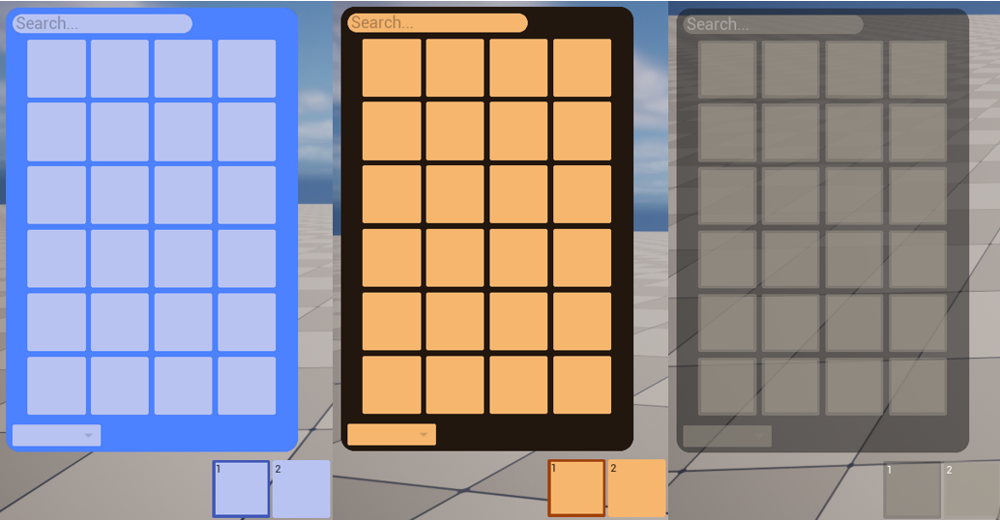
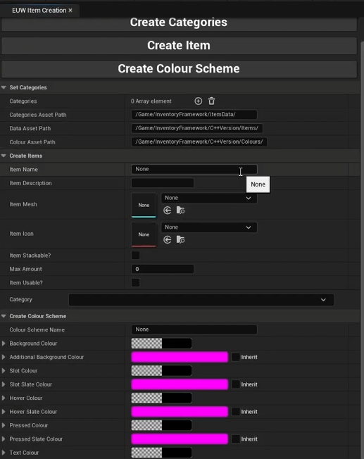

Inventory Tool System


Overview
This is an inventory tool system that I created that allowed people to create new inventory items and assign them to a user descriped category. These items are then objects within the game that can be picked up and used within an inventory. This inventory also filters the objects by their categories as well as a name search
My Contributions
This was a solo project comprising of two main programming sections. The Item Creation Widget which was to be run outside of playing and was where the user would set the categories, add items or create a new colour scheme of the inventory. As well as the in game inventory and toolbar functionality which includes drag and drop and stack manipulation.
